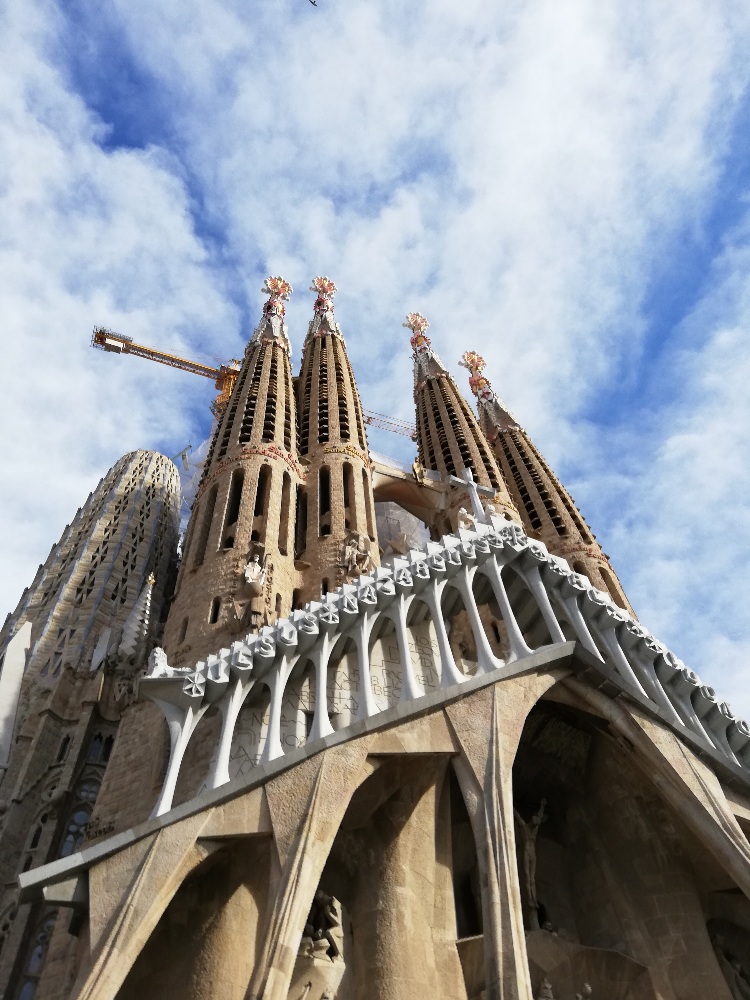

Kelione
Barcelona
Ispanijoje yra daugybe lankytinu vietu. Keletas is ju yra:
- Montserrat vienuolynas bei kalnas
- Gotikinis kvartalas
- Picasso muziejus
- Architekto Gaudi architektura (Sagrada Familia, parkas Guell, Batljo, Milos namas)
- Grupes "Nejuokas" koncertas
Stai keletas Gaudi kuriniu:



Vika Meskauskaite